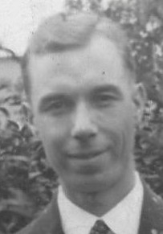
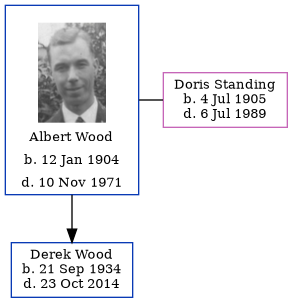

Albert Edward Wood 1904 - 1971
[ Home ] | [ Calendar ] | [ Surnames Index ] | [ Family History ]Albert Wood, the husband of Doris Elizabeth Standing (the fourth cousin once-removed on the father's side of Nigel Horne), was born in Plumstead, London, England on Jan 12, 19041 and married Doris (with whom he had 1 child, Derek Albert) in Greenwich, London, England around Aug 19313.
Throughout his life, he lived at 90 Charlton Lane, Charlton, London on Sep 29, 1939; and on 39 Walpole Road, Walthamstow, London in 1971.
He died on Nov 10, 1971 in Charlton, London2.
Children
- Derek Albert was born on Sep 21, 1934
Citations
- England & Wales births 1837-2006 - Findmypast
- England & Wales Government Probate Death Index 1858-2019 - Findmypast
- England & Wales Marriages 1837-2005 - Findmypast
Media
Albert Edward Wood

England & Wales births 1837-2006 - BMD/B/1904/4/AZ/000648/022
England & Wales marriages 1837-2005 - BMD/M/1931/3/AZ/001588/083
England & Wales Government Probate Death Index 1960-2019 - GBOR/GOVPROBATE/A/1969-1971/00757857
England & Wales Government Probate Death Index 1858-2019 - GBOR/GOVPROBATE/C/1972-1972/00255261
Family Tree
Generated by Ged2Site. Last updated on Jul 20, 2025